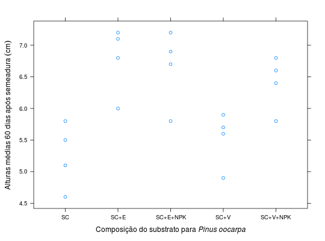

Dados de experimento para estudo do efeito de 5 composições de substrato para o desenvolvimento de Pinus oocarpa. Experimento realizado em delineamento inteiramente casualizado.
Um data.frame com 20 observações e 3 variáveis, em que
compSC - solo de
cerrado, SC+E - solo de cerrado com esterco,
SC+E+NPK - idem ao anterior com NPK, SC+V - solo de
cerrado com vermiculita, SC+V+NPK - o anterior com NPK.reptaltBANZATTO; KRONKA (2013), Quadro 3.7.1, pág. 64.
library(lattice) data(BanzattoQd3.7.1)#> Warning: data set ‘BanzattoQd3.7.1’ not foundaggregate(alt ~ comp, data = BanzattoQd3.7.1, FUN = function(x) { c(mean = mean(x), var = var(x)) })#> comp alt.mean alt.var #> 1 SC 5.2500000 0.2700000 #> 2 SC+E 6.7750000 0.2958333 #> 3 SC+E+NPK 6.6500000 0.3633333 #> 4 SC+V 5.5250000 0.1891667 #> 5 SC+V+NPK 6.4000000 0.1866667xyplot(alt ~ comp, data = BanzattoQd3.7.1, xlab = expression( Composição~do~substrato~para~italic("Pinus oocarpa")), ylab = expression(Alturas~médias~60~dias~após~semeadura~(cm)))